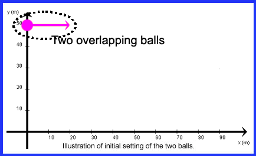

ACTIVITIES FOR THE TWO-BALL APPLET
ACTIVITY 2: ONE BALL DROPPED FROM REST, ONE BALL LAUNCHED HORIZONTALLY
Place both balls at point (0, 50) m as shown in the figure below. Set the velocity components for both balls as follows:
Ball 1: v1x (0) = 20.0 m/s, v1y (0) = 0
Ball 2: v2x (0) = 0, v2y (0) = 0
Make sure the applet is set to zero air
resistance.
Launch the balls, observe their trajectories,
and answer the following questions.
1,
Do both balls cross the x-axis at the same time?
(a) yes
(b) no
2. Do both balls cross the x-axis with the same speed?
(a) yes
(b) no
3. Do both balls cross the x-axis with the same acceleration?
(a) yes
(b) no
4. Do both balls cross the x-axis with the same horizontal velocity?
(a) yes
(b) no
5. Do both balls cross the x-axis with the same vertical velocity?
(a) yes
(b) no